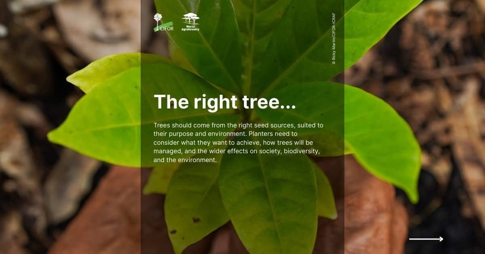
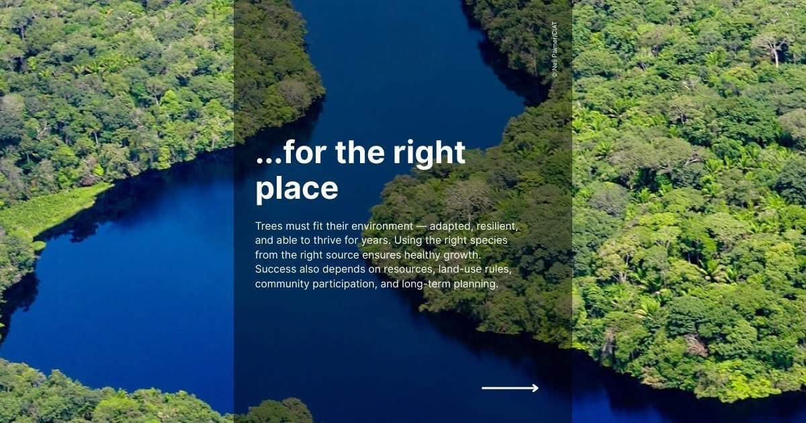
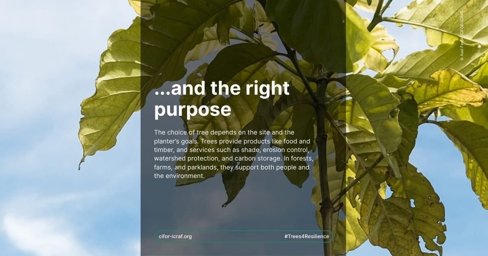

Atlas Enviro champions a modern approach to arboriculture, focusing on biological solutions to pest management. We cater to urban gardeners and property managers seeking sustainable alternatives in Cape Town.
Founded on the belief that nature holds the keys to its own balance, our team releases predatory and parasitic insects to tackle pest issues. This method ensures a harmonious relationship between urban environments and nature.
Our commitment lies in providing eco-friendly, effective services that restore and maintain the natural equilibrium disrupted by urbanization. We promise transparency, innovation, and exceptional service in every project.
Explore our range of eco-friendly services designed to protect and enhance your green spaces.
Utilizing beneficial insects to naturally control and eliminate pests, ensuring a healthy and balanced garden ecosystem.
Early identification and management of Polyphagous Shot Hole Borer infestations to prevent widespread damage to trees.
Professional monitoring and maintenance of oak trees, including pest detection and health assessments.



We'd love to hear from you — reach out to us anytime.